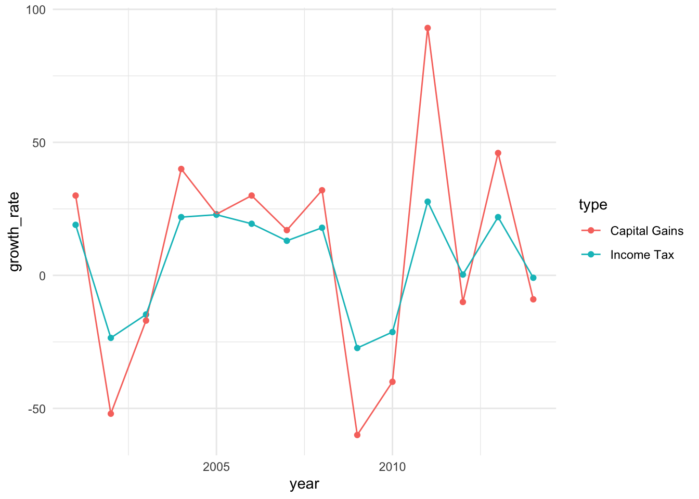
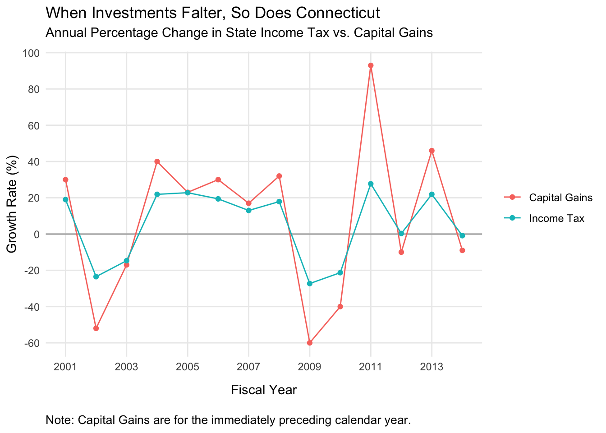

I came across a graph not long ago that I immediately saved for later use. Making clean, effective data visualizations is hard, and there is always someone waiting to gleefuly inform you that you’ve messed it up in one way or another. Sometimes these are minor aesthetic quibbles, and the visualization still manages to communicate what it needs to effectively.
Other times, missteps make the graph harder to interpret, and put too much onus on the viewer to make sense of what they’re seeing.
This was one of those latter cases.

There is a lot going on here. It’s extremely difficult to parse this correctly. We’ve got:
- Two y-axes on two different scales, meaning that two radically different values show up as overlapping, and very similar values appear to be much farther apart than they ought to be
- Two y-axes and no way to tell which set of data goes with which axis without a legend
- The same data type (growth rate) represented by two separate y-axes scaled to different values
- In addition to the two axes, every data point is annotated in the graph itself (which should obviate the need for axes, or vice-versa)
- These labels have inconsistent positions, and sometimes both points are labeled, and sometimes only one is
- Data of the same type (value over time) represented by two different formats, a bar and a line, providing stark visual difference and therefore implying difference in the data itself even though none exists
In the defense of the graph and its makers, some of these choices make sense in a way. The cap gains growth varies a lot more than the enconomic growth rate, which could make it harder to see the take-home pattern. The smaller fluctuations in the income tax growth rate could get swamped by the much larger swings in cap gains. I think, though, that in an effort to get around this problem (if that was the reason), more were introduced.
This graph has a straightforward message it wants to communicate: cap gains and state income tax vary together. When one goes up, so does the other; when one falls, the other tumbles after. This is the message the graph should communicate. Let’s see if we can rework this a little bit.
Since this is just an excersize, I’m not going to fret too much about recovering exactly the right values. Most of them are helpfully labeled, but for the handful that aren’t I’ll just eyeball it from the graph.
ct <- data.frame('type'=rep(c('Capital Gains', 'Income Tax'), each=14),
'year'=rep(2001:2014, 2),
'growth_rate'=c(30, -52, -17, 40, 23, 30, 17, 32, -60,
-40, 93, -10, 46, -9,
19, -23.5, -14.7, 21.9, 22.8, 19.4, 13,
17.9, -27.3, -21.3, 27.7, .3, 21.9, -.9))Let’s just see how things look if we do a straightforward connected line graph. On the y-axis will simply be the growth rate, on the x-axis, the fiscal year. Cap gains and income tax will be connected lines, colored accordingly.
library(ggplot2)
gains <- ggplot(data=ct, aes(x=year, y=growth_rate, color=type)) +
geom_point() +
geom_line() +
theme_minimal()
print(gains)
That doesn’t look too bad for a first step! The trends are still very visible–you can still clearly see that at every data point cap gains tracks with income tax. The difference in scales doesn’t actually obscure the pattern, and you can still see the changes for income tax even though they are smaller.
We’re not done yet, though. Let’s clean this up some more. We’ll need to fix the labels, put each year visible on the x-axis, make the y-axis intervals a little more granular, and add a line at 0 to make it obvious when things dip into the negative.
I’ll reproduce the entire plotting syntax, for clarity.
gains_tweaks <- ggplot(data=ct, aes(x=year, y=growth_rate, color=type)) +
geom_hline(yintercept=0, color='darkgray') +
geom_line() +
geom_point() +
labs(title = "When Investments Falter, So Does Connecticut",
subtitle = "Annual Percentage Change in State Income Tax vs. Capital Gains",
caption = "Note: Capital Gains are for the immediately preceding calendar year.",
y = "Growth Rate (%)",
x = "Fiscal Year",
color=NULL) +
scale_y_continuous(breaks=seq(-60,100, by=20)) +
scale_x_continuous(breaks=seq(2001, 2014, by=2)) +
theme_minimal() +
theme(panel.grid.minor = element_blank(),
plot.caption = element_text(hjust=0, size=10),
plot.title = element_text(margin=margin(0, 0, 5, 0)),
plot.subtitle = element_text(margin=margin(0, 0, 10, 0)),
axis.title.x = element_text(margin=margin(10, 0, 10, 0)))
print(gains_tweaks)
That’s an improvement, I’d say. One could quibble about details here and there (but don’t, you know, feel obligated to). Regardless, now we have something that’s much easier to digest. One y-axis for general growth rate, and both types of data are represented by the same visual technique. A lot of visual clutter pruned away.
In the end, it still communicates the core idea: these two values vary together. If anything it’s a little clearer in this case anyway, because we can see that the two lines have the same shape over the years as they rise and fall.
This turned out to be a surprisingly fun exercise. Looking at a visualization and thinking carefully about how you would do it yourself (better, or just differently) is a great way to practice.